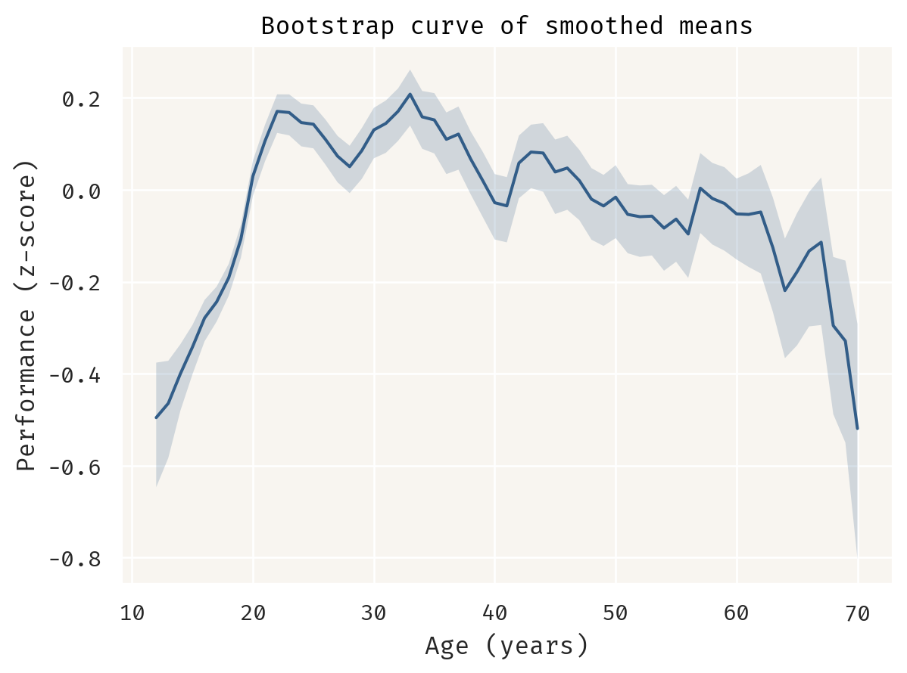

import polars as pl
digit_span = (
pl.read_csv("data/experiment-2.csv")
.filter(pl.col("age").is_between(10, 69))
.with_columns(
y=(pl.col("DigitSpan") - pl.col("DigitSpan").mean()) / pl.col("DigitSpan").std()
)
)Additive aging curve (draft)
At what age does working memory peak?
Warning
This post is a work in progress.
Recently, I was involved in designing an experiment where each participant received a treatment at a random time , between 5 and 30 minutes. After the treatment, each participant produced a binary response. Soon, we realized time had more than one effect over the response rate: as
increased, the rate of positive responses 1) increased; then 2) plateaued; and finally 3) decreased.
This kind of non-monotonic relationship is common in cognitive and sports research, particularly in the relationship between age and performance, where it’s called an aging curve. For an interesting review of aging curves, see (Vaci et al. 2019), where the authors discuss modeling strategies and study the effect of aging over the performance of NBA players.
Vaci, Nemanja, Dijana Cocić, Bartosz Gula, and Merim Bilalić. 2019. “Large Data and Bayesian Modeling—Aging Curves of NBA Players.” Behavior Research Methods 51 (4): 1544–64. https://doi.org/10.3758/s13428-018-1183-8.
Andrew Gelman wrote about this topic a couple of times in his blog: see his posts from 2018 and 2023, where he suggests modeling these relationships using an additive function like
where
is a monotonically increasing function with a right asymptote; and
is a monotonically decreasing function with a left asymptote.
In this post, I’ll analyze an experimental dataset by fitting and comparing two different models: a non-parametric bootstrap and a decomposable curve like .
The Digit Span test
The motivation for Gelman’s post from 2018 was a study relating age to peak cognitive functioning (Hartshorne and Germine 2015). According to the study, some of their experiments were conducted through a large scale online experimentation platform:
Hartshorne, Joshua K., and Laura T. Germine. 2015. “When Does Cognitive Functioning Peak? The Asynchronous Rise and Fall of Different Cognitive Abilities Across the Life Span.” Psychological Science 26 (4): 433–43. https://doi.org/10.1177/0956797614567339.
Participants in Experiment 2 (N = 10,394; age range = 10–69 years old) […] were visitors to TestMyBrain.org, who took part in experiments in order to contribute to scientific research and in exchange for performance- related feedback. […] We continued data collection for each experiment for approximately 1 year, sufficient to obtain around 10,000 participants, which allowed fine-grained age-of-peak-performance analysis.
The data produced by this experiment is available online (Germine and Hartshorne 2016). This dataset contains results for multiple tests, but I’ll focus on the Digit Span test during this analysis. According to Cambridge Cognition:
Germine, Laura, and Joshua K Hartshorne. 2016. “Hartshorne & Germine (2015) When Does Cognitive Functioning Peak?” OSF. osf.io/f2saj.
Digit Span (DGS) is a measure of verbal short term and working memory that can be used in two formats, Forward Digit Span and Reverse Digit Span. This is a verbal task, with stimuli presented auditorily, and responses spoken by the participant and scored automatically by the software. Participants are presented with a random series of digits, and are asked to repeat them in either the order presented (forward span) or in reverse order (backwards span). While superficially very similar tasks, forward and backwards span rely on somewhat separable cognitive capacities: the simpler forward span task requires verbal working memory and attention, while the backwards span task additionally tests cognitive control and executive function.
Participants are scored according to their longest correctly repeated list of digits.
The relationship between age and Digit Span performance for each participant is plotted below:
Visually, it’s still unclear if this relationship follows an aging curve, but we’ll get back to this matter in the next section.
Bootstrap estimates
In the original paper, the authors describe a bootstrap resampling procedure to estimate the distribution of ages of peak performance:
Estimates and standard errors for age of peak performance were calculated using a bootstrap resampling procedure identical to the one used in Experiment 1 but applied to raw performance data. To dampen noise, we smoothed means for each age using a moving 3-year window prior to identifying age of peak performance in each sample. Other methods of dampening noise provide similar results.
Let’s decompose this method (as I understand it) into steps:
- Sample, with replacement,
observations from the dataset;
- Calculate the mean performance for each age within the sample;
- Repeat steps 1 and 2
times;
- Sort each sample by age and smooth age means using a 3-year rolling average;
- Find the age of peak performance for each sample.
def sample_bootstrap(data: pl.DataFrame):
samples = (
data.sample(n * m, with_replacement=True, seed=seed)
.with_columns(sample=pl.arange(1, n * m + 1) % m)
.group_by("sample", "age")
.agg(mean=pl.col("y").mean())
.sort("sample", "age")
.with_columns(smoothed_mean=pl.col("mean").rolling_mean(3).over("sample"))
)
peak = samples.group_by("sample").agg(
age=pl.col("age").get(pl.col("smoothed_mean").arg_max())
)
return samples, peak
n = digit_span.height
m = 10000
seed = 37
samples, peak = sample_bootstrap(digit_span)This algorithm yields the following bootstrap distribution of ages of peak performance:
This distribution suggests two important things:
- The most probable age of peak performance is 33;
- Peak performance could happen anywhere between the early 20s and late 30s, except during the late 20s.
Suggestion 2 is probably not true. In fact, this distribution seems like a mixture of two distributions, but I’ll get back to this point in the next section. For now, I’ll use our bootstrap estimates to replicate figure 3a from the original paper. Using the samples obtained in step 4, for each age mean, I calculated its median and 90% interquantile range, yielding a nonparametric curve:

Since this curve is empirical, there’s not much more than meets the eye here. However, note that it follows the rising, plateauing and falling behavior of an aging curve. There’s a steep increase during ages 10 to 20, followed by a plateau between 20 and 30, and a slow decline beginning at 40.
The language effect
Additive functions
Double exponential
import numpy as np
import pymc as pm
def g(x):
return g_1(x) + g_2(x)
def g_1(x):
return α + β[0] * pm.math.exp(-λ[0] * x)
def g_2(x):
return β[1] * pm.math.exp(λ[1] * x)
age = english_span.get_column("age")
y = english_span.get_column("y")
age_range = np.arange(age.min(), age.max() + 1)
with pm.Model() as double_exponential:
t = pm.Data("t", age)
α = pm.Normal("α", 0, 1)
β = pm.Normal("β", 0, 1, size=2)
λ = pm.HalfNormal("λ", 0.004, size=2)
μ = pm.Deterministic("μ", g(t))
σ = pm.HalfNormal("σ", 1)
pm.Normal("y", mu=μ, sigma=σ, observed=y)
curve = pm.Deterministic("curve", g(age_range))
samples = pm.sample(progressbar=False, target_accept=0.95, random_seed=seed)WARNING:pytensor.tensor.blas:Using NumPy C-API based implementation for BLAS functions.Double logistic
Lipovetsky, Stan. 2010. “Double Logistic Curve in Regression Modeling.” Journal of Applied Statistics 37 (11): 1785–93. https://doi.org/10.1080/02664760903093633.
def g_1(t):
return α[0] + (α[1] - α[0]) / (1 + pm.math.exp(β[0] - λ[0] * t))
def g_2(t):
return (α[2] - α[1]) / (1 + pm.math.exp(β[1] + λ[1] * t))
with pm.Model() as double_logistic:
t = pm.Data("t", age)
α = pm.Normal("α", 0, 1, size=3)
β = pm.Normal("β", 0, 1, size=2)
λ = pm.HalfNormal("λ", 1, size=2)
μ = pm.Deterministic("μ", g(t))
σ = pm.HalfNormal("σ", 1)
pm.Normal("y", mu=μ, sigma=σ, observed=y)
curve = pm.Deterministic("curve", g(age_range))
samples = pm.sample(progressbar=False, target_accept=0.95, random_seed=seed)ERROR:pymc.stats.convergence:There were 1 divergences after tuning. Increase `target_accept` or reparameterize.
ERROR:pymc.stats.convergence:The effective sample size per chain is smaller than 100 for some parameters. A higher number is needed for reliable rhat and ess computation. See https://arxiv.org/abs/1903.08008 for detailsCitation
BibTeX citation:
@online{assunção2024,
author = {Assunção, Luís},
title = {Additive Aging Curve (Draft)},
date = {2024-11-04},
url = {https://assuncaolfi.github.io/site/blog/aging-curve},
langid = {en}
}
For attribution, please cite this work as:
Assunção, Luís. 2024. “Additive Aging Curve (Draft).”
November 4, 2024. https://assuncaolfi.github.io/site/blog/aging-curve.